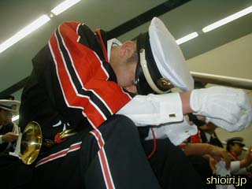
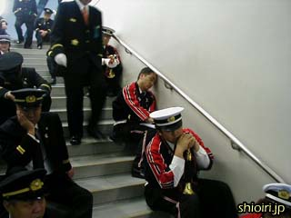
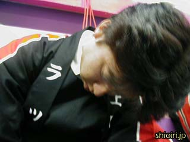
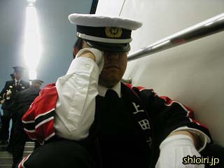
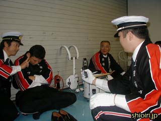
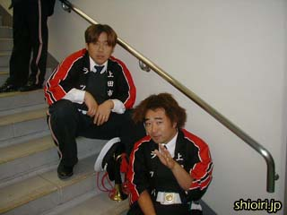

| あまりにも派手に写真を撮りまくっていたので、みんな警戒し始めました。しおいりが近づくと、殺気を感じて目を覚ましてしまうそうです。 |
|  |
でも彼は目を覚ましませんでした。 |
|  |
彼の場合、アップを撮りに行ったら目を覚ましてしまいました。 |
|  |
しおいりのカメラを警戒していた彼も、つい油断してしまったようです。 |
|  |
彼もそうです。一瞬の油断をしおいりのカメラは見逃しません。 |
|  |
しおいりはそんな写真を撮るのに夢中で、依然としてギンギンです。 |
|  |
残念ながら、彼らだけはスキを見せませんでした。 |
こんな写真ばかり撮っていたら、ついにデジカメのバッテリーが切れてしまいました。
本番では無事、立派に任務をこなし、「上田市消防団ラッパ隊、ここにあり！」と全国のみなさんにアピールできたと思います。でも岩手県宮守村消防団、静岡県袋井市消防団のすばらしいドリル演奏を目の当たりにし、僕らもまだまだやれることがあるなぁと、とても刺激を受けることができました。
ひとつだけ残念だったのは、天皇皇后両陛下のご臨席中は舞台裏で待機であったため、オーロラビジョンでしかお姿を拝見できなかったこと。直線距離では、かなり近いところにいたと思うんですけどね。
しおいりは昨年度まででラッパ隊を引退したはずなんですが、小太鼓の担当して今回参加させていただくことができ、本当にいい思い出をつくることができました。
関連サイト
宮内庁 天皇陛下のおことば
首相官邸 小泉総理の動き
首相官邸 小泉総理の動き［ビデオ版］ 一瞬ですが、バイク隊の動画があります。
「自治体消防５５周年記念大会」をGoogleで検索 |
≪前のページ |